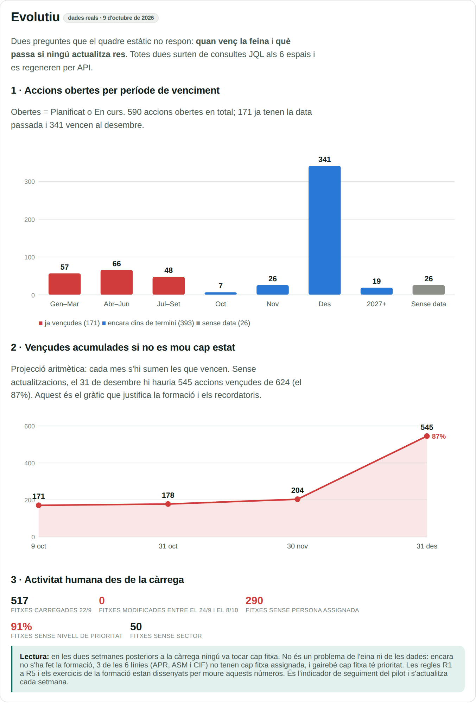
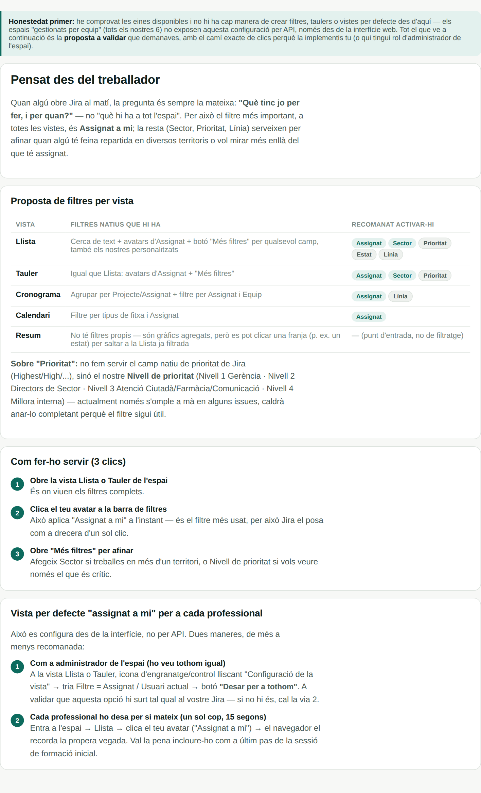

<title>Pla d'implantació Jira RSBMN</title>
<style>
  /* Layout: single reading column (max 980px) with a sticky section index; per-line training
     plans as a 2-column card grid that stacks on phones. Palette shared with the Jira guide. */
  :root{
    --bg:#f7f8f6; --surface:#ffffff; --surface-2:#eef1ee;
    --ink:#10201c; --ink-2:#4a5a55; --muted:#7c8a85;
    --line:#dde3de; --accent:#0d6b5e; --accent-ink:#ffffff; --accent-soft:#e3f1ee;
    --good:#0a7d0a; --warning:#a86f00; --critical:#c23434;
    --good-soft:#e4f3e4; --warning-soft:#fbf0d9; --critical-soft:#f9e3e3;
    color-scheme: light;
  }
  @media (prefers-color-scheme: dark){
    :root:not([data-theme="light"]){
      --bg:#0f1512; --surface:#161d19; --surface-2:#1c2420;
      --ink:#f2f5f3; --ink-2:#c4cdc9; --muted:#8d9994;
      --line:#2a332e; --accent:#3ea593; --accent-ink:#06130f; --accent-soft:#15302b;
      --good:#4fcf6a; --warning:#e7b24a; --critical:#ee7a7a;
      --good-soft:#163020; --warning-soft:#2f2614; --critical-soft:#341b1b;
      color-scheme: dark;
    }
  }
  :root[data-theme="dark"]{
    --bg:#0f1512; --surface:#161d19; --surface-2:#1c2420;
    --ink:#f2f5f3; --ink-2:#c4cdc9; --muted:#8d9994;
    --line:#2a332e; --accent:#3ea593; --accent-ink:#06130f; --accent-soft:#15302b;
    --good:#4fcf6a; --warning:#e7b24a; --critical:#ee7a7a;
    --good-soft:#163020; --warning-soft:#2f2614; --critical-soft:#341b1b;
    color-scheme: dark;
  }
  *{box-sizing:border-box}
  body{background:var(--bg); color:var(--ink); font-family:-apple-system,BlinkMacSystemFont,"Segoe UI",Roboto,Arial,sans-serif; font-size:15px; padding-inline:18px; padding-block:0 40px; max-width:980px; margin:0 auto}
  h1,h2,h3{text-wrap:balance; letter-spacing:-0.01em}
  h2{font-size:1.35rem; margin:0 0 6px}
  h3{font-size:1.02rem; margin:18px 0 6px}
  p{line-height:1.55; color:var(--ink-2); max-width:68ch; margin:6px 0}
  li{line-height:1.5; color:var(--ink-2)}
  code{font:.85em ui-monospace,SFMono-Regular,Menlo,monospace; background:var(--surface-2); padding:1px 5px; border-radius:4px; color:var(--ink); word-break:break-word}
  kbd{display:inline-block; padding:1px 7px; border:1px solid var(--line); border-bottom-width:2px; border-radius:5px; background:var(--surface); font:600 .85em ui-monospace,monospace; color:var(--ink)}
  a{color:var(--accent)}
  .eyebrow{text-transform:uppercase; letter-spacing:.09em; font-size:.72rem; font-weight:700; color:var(--accent)}
  header{padding-block:28px 16px; border-bottom:1px solid var(--line)}
  header h1{font-size:clamp(1.5rem,4vw,2.1rem); margin:6px 0 8px}
  nav.idx{position:sticky; top:env(safe-area-inset-top,0px); z-index:5; background:var(--bg); padding-block:10px; display:flex; flex-wrap:wrap; gap:6px; border-bottom:1px solid var(--line)}
  nav.idx a{font-size:.84rem; font-weight:600; color:var(--ink-2); text-decoration:none; padding:6px 12px; border-radius:999px}
  nav.idx a:hover, nav.idx a:focus-visible{background:var(--surface-2); outline:none}
  section{padding-block:26px 6px; display:flex; flex-direction:column; gap:14px; scroll-margin-top:64px}
  .card{background:var(--surface); border:1px solid var(--line); border-radius:12px; padding:18px; min-width:0}
  .grid{display:grid; grid-template-columns:repeat(auto-fit,minmax(min(100%,420px),1fr)); gap:14px}
  .table-wrap{overflow-x:auto}
  table{border-collapse:collapse; width:100%; font-size:.88rem}
  th{text-align:left; font-size:.7rem; letter-spacing:.05em; text-transform:uppercase; color:var(--muted); padding:8px 10px; border-bottom:1px solid var(--line); white-space:nowrap}
  td{padding:9px 10px; border-bottom:1px solid var(--line); vertical-align:top; color:var(--ink-2)}
  td strong{color:var(--ink)}
  td.n{font-variant-numeric:tabular-nums; text-align:right; white-space:nowrap}
  .pill{display:inline-block; font-size:.72rem; font-weight:700; padding:2px 8px; border-radius:999px; white-space:nowrap}
  .crit{background:var(--critical-soft); color:var(--critical)}
  .warn{background:var(--warning-soft); color:var(--warning)}
  .ok{background:var(--good-soft); color:var(--good)}
  .info{background:var(--accent-soft); color:var(--accent)}
  .q{border-left:3px solid var(--accent); padding:4px 0 4px 14px}
  .q h3{margin:0 0 4px}
  .rec{margin-top:8px; padding:10px 12px; background:var(--accent-soft); border-radius:8px; color:var(--ink); font-size:.92rem; line-height:1.5}
  .rec b{color:var(--accent)}
  .phase{display:grid; grid-template-columns:150px 1fr; gap:14px; padding-block:12px; border-bottom:1px solid var(--line)}
  .phase:last-child{border-bottom:0}
  .phase .when{font-weight:700; font-variant-numeric:tabular-nums; color:var(--accent); font-size:.9rem}
  .phase .when span{display:block; font-weight:500; color:var(--muted); font-size:.78rem}
  .phase h3{margin:0 0 4px}
  .phase ul{margin:4px 0 0; padding-left:18px}
  @media (max-width:560px){ .phase{grid-template-columns:1fr; gap:4px} }
  .line-card h3{margin:0}
  .line-head{display:flex; justify-content:space-between; gap:10px; align-items:baseline; flex-wrap:wrap}
  .line-head .who{font-size:.82rem; color:var(--muted)}
  .nums{display:flex; flex-wrap:wrap; gap:14px; margin-block:12px}
  .nums div{min-width:64px}
  .nums b{display:block; font-size:1.25rem; font-variant-numeric:tabular-nums; color:var(--ink)}
  .nums b.c{color:var(--critical)}
  .nums span{font-size:.68rem; text-transform:uppercase; letter-spacing:.04em; color:var(--muted)}
  .focus{font-size:.9rem; color:var(--ink); background:var(--surface-2); padding:10px 12px; border-radius:8px; line-height:1.5}
  .agenda{margin-top:10px}
  .agenda td:first-child{font-variant-numeric:tabular-nums; font-weight:700; color:var(--accent); white-space:nowrap; width:56px}
  .agenda td:nth-child(2){white-space:nowrap; color:var(--muted); width:40px}
  figure{margin:0; border:1px solid var(--line); border-radius:12px; overflow:hidden; background:var(--surface)}
  figure img{display:block; width:100%; height:auto}
  figcaption{padding:9px 12px; font-size:.8rem; color:var(--ink-2); border-top:1px solid var(--line); line-height:1.45}
  figcaption .src{font-size:.64rem; font-weight:700; letter-spacing:.05em; text-transform:uppercase; padding:2px 7px; border-radius:999px; margin-right:6px}
  .src.real{background:var(--accent); color:var(--accent-ink)}
  .src.guia{background:var(--surface-2); color:var(--ink-2); border:1px solid var(--line)}
  .figs{display:grid; grid-template-columns:repeat(auto-fit,minmax(min(100%,300px),1fr)); gap:14px; align-items:start}
  .tips{display:grid; grid-template-columns:repeat(auto-fit,minmax(min(100%,280px),1fr)); gap:10px}
  .tip{background:var(--surface); border:1px solid var(--line); border-radius:10px; padding:12px 14px}
  .tip b{display:block; color:var(--ink); margin-bottom:3px}
  .tip span{font-size:.88rem; color:var(--ink-2); line-height:1.45}
  .note{font-size:.9rem; line-height:1.5; padding:12px 14px; border-radius:10px; background:var(--warning-soft); color:var(--ink)}
  footer{margin-top:24px; padding-top:16px; border-top:1px solid var(--line); font-size:.8rem; color:var(--muted)}
  @media (prefers-reduced-motion:no-preference){ html{scroll-behavior:smooth} }
</style>

<header>
  <p class="eyebrow">Pla de Treball Metro Nord 2026 · Oficina Tècnica</p>
  <h1>Pla d'implantació i prova pilot de Jira</h1>
  <p>Diagnòstic real dels 6 espais, decisions pendents, full de ruta fins a l'1 de gener de 2027, formació de 2 hores per a cada línia, trucs amb imatges i revisió final. Dades extretes de Jira per API el 9 d'octubre de 2026. La guia d'ús pas a pas és a <a href="https://claude.ai/artifact/7RfAVsSo3iKQmpkCkhkYny">Guia Jira RSBMN</a>.</p>
</header>

<nav class="idx" aria-label="Seccions">
  <a href="#diagnostic">Diagnòstic</a>
  <a href="#decisions">Decisions</a>
  <a href="#ruta">Full de ruta</a>
  <a href="#indicadors">Indicadors</a>
  <a href="#formacio">Formació per línia</a>
  <a href="#tips">Trucs amb imatges</a>
  <a href="#revisio">Revisió</a>
</nav>

<!-- DIAGNÒSTIC -->
<section id="diagnostic">
  <div>
    <h2>Diagnòstic de configuració i espais</h2>
    <p>Revisió feta per API sobre la configuració real, no sobre la teoria. El resum és que les dades hi són però l'organització al voltant encara no: ningú ha tocat cap fitxa en dues setmanes i la meitat de les fitxes no tenen responsable.</p>
  </div>
  <div class="card">
    <h3 style="margin-top:0">Estat per línia</h3>
    <div class="table-wrap"><table>
      <tr><th>Espai</th><th>Responsable</th><th class="n">Fitxes</th><th class="n">En curs</th><th class="n">Finalitzat</th><th class="n">Vençudes</th><th class="n">Vencen &lt;30 dies</th><th class="n">Sense assignar</th></tr>
      <tr><td><strong>AIN</strong> Atenció Intermèdia</td><td>Kilian Lansaque</td><td class="n">158</td><td class="n">48</td><td class="n">9</td><td class="n"><span class="pill crit">48</span></td><td class="n"><span class="pill warn">23</span></td><td class="n"><span class="pill ok">0</span></td></tr>
      <tr><td><strong>APR</strong> Atenció Primària</td><td>Mireia Rodríguez</td><td class="n">159</td><td class="n">0</td><td class="n">0</td><td class="n"><span class="pill crit">32</span></td><td class="n">0</td><td class="n"><span class="pill crit">159</span></td></tr>
      <tr><td><strong>AH</strong> Atenció Hospitalària</td><td>Alba Luna</td><td class="n">121</td><td class="n">0</td><td class="n">0</td><td class="n"><span class="pill crit">30</span></td><td class="n">1</td><td class="n"><span class="pill ok">2</span></td></tr>
      <tr><td><strong>ASM</strong> Salut Mental</td><td>Maria Salut Martínez</td><td class="n">102</td><td class="n">6</td><td class="n">2</td><td class="n"><span class="pill crit">32</span></td><td class="n">1</td><td class="n"><span class="pill crit">102</span></td></tr>
      <tr><td><strong>SI</strong> Sistemes d'Informació</td><td>Elisa Poses</td><td class="n">78</td><td class="n">8</td><td class="n">15</td><td class="n"><span class="pill crit">29</span></td><td class="n">3</td><td class="n"><span class="pill warn">21</span></td></tr>
      <tr><td><strong>CIF</strong> Contractació i Facturació</td><td>Julia Valls</td><td class="n">6</td><td class="n">0</td><td class="n">0</td><td class="n">0</td><td class="n">0</td><td class="n"><span class="pill ok">0</span></td></tr>
      <tr><td><strong>Total</strong></td><td></td><td class="n"><strong>624</strong></td><td class="n"><strong>62</strong></td><td class="n"><strong>26</strong></td><td class="n"><strong>171</strong></td><td class="n"><strong>28</strong></td><td class="n"><strong>290</strong></td></tr>
    </table></div>
  </div>

  <div class="card">
    <h3 style="margin-top:0">Troballes de configuració</h3>
    <div class="table-wrap"><table>
      <tr><th>Gravetat</th><th>Troballa</th><th>Evidència</th><th>Què cal fer</th></tr>
      <tr><td><span class="pill crit">Alta</span></td><td><strong>Activitat zero després de la càrrega</strong></td><td>0 fitxes modificades entre el 24/9 i el 8/10 als 6 espais.</td><td>Formació per línia abans de novembre. Sense això, al desembre hi haurà 545 vençudes (87%).</td></tr>
      <tr><td><span class="pill crit">Alta</span></td><td><strong>Fitxes sense responsable</strong></td><td>284 de 624 (eren 290; les 6 de CIF ja estan assignades). APR i ASM no en tenen cap d'assignada.</td><td>Autoassignació amb la tecla <kbd>I</kbd> durant la formació: la persona que s'assigna no rep correu. L'informador de la càrrega (Kilian) sí que en pot rebre; es desactiva a les notificacions de l'espai durant les sessions.</td></tr>
      <tr><td><span class="pill crit">Alta</span></td><td><strong>Prioritat buida</strong></td><td>566 fitxes (91%) sense Nivell de prioritat.</td><td>Omplir-la a l'exercici de la formació i activar-la com a obligatòria en acabar cada sessió (decisió 5).</td></tr>
      <tr><td><span class="pill warn">Mitjana</span></td><td><strong>Camps obligatoris desiguals</strong></td><td>Només AIN·Projecte té Sector i Prioritat obligatoris. Persona assignada no ho és enlloc.</td><td>Aplicar l'estàndard als 6 espais (12 pantalles), seguint "Configurar ara" de la guia.</td></tr>
      <tr><td><span class="pill warn">Mitjana</span></td><td><strong>Accés no segmentat per espai</strong></td><td>Els mateixos 14 usuaris poden ser assignats a qualsevol dels 6 espais.</td><td>Acceptable per al pilot (afavoreix la col·laboració). Decidir abans de l'1/1/2027 si cal restringir.</td></tr>
      <tr><td><span class="pill warn">Mitjana</span></td><td><strong>CIF sense responsable</strong></td><td>6 fitxes sense assignar i cap persona de referència.</td><td>Resolt el 9/10: les 6 fitxes assignades a la Julia Valls per API (decisió 2). Pendent l'accés d'en Carles (decisió 3).</td></tr>
      <tr><td><span class="pill info">Baixa</span></td><td><strong>Brossa de proves</strong></td><td>AH-1 i AH-2 a Nevera, fitxes de prova a SI ("rgegr", "dwq"), bessons SI-51 i SI-53.</td><td>Esborrar o fusionar a la fase 0. Distorsionen el quadre de comandament.</td></tr>
      <tr><td><span class="pill info">Baixa</span></td><td><strong>50 fitxes sense Sector</strong></td><td>Sector buit en 50 fitxes.</td><td>Completar a l'exercici de cada línia.</td></tr>
      <tr><td><span class="pill ok">Positiu</span></td><td><strong>IA disponible al lloc</strong></td><td>3 agents d'IA d'Atlassian (Triage, Delivery, Coding) apareixen com a usuaris assignables.</td><td>Confirmar el pla contractat i activar el resum de fitxes i la cerca en llenguatge natural.</td></tr>
      <tr><td><span class="pill ok">Positiu</span></td><td><strong>Estructura sòlida</strong></td><td>Jerarquia Projecte → Acció correcta, camps de Línia, Objectiu i Sector amb llistes tancades.</td><td>Cap canvi. És la base per al repositori únic de 2027.</td></tr>
    </table></div>
  </div>
</section>

<!-- DECISIONS -->
<section id="decisions">
  <div>
    <h2>Decisions preses</h2>
    <p>Decidides per Kilian Lansaque el 9 d'octubre de 2026, després de la revisió de configuració. Són la base del full de ruta i de la formació.</p>
  </div>
  <div class="card">
    <div class="table-wrap"><table>
      <tr><th>#</th><th>Decisió</th><th>Resolució</th><th>Conseqüència al pla</th></tr>
      <tr><td>1</td><td><strong>Desplegament</strong></td><td><span class="pill ok">Dues onades</span></td><td>AIN, SI i CIF la setmana del 26/10. AH, ASM i APR la del 2/11.</td></tr>
      <tr><td>2</td><td><strong>Responsable de CIF</strong></td><td><span class="pill ok">Julia Valls</span></td><td>Fet el 9/10: CIF-1 a CIF-6 assignades a la Julia per API (ha rebut 6 correus d'assignació). Per a les fitxes noves, l'automatització A4 (assignació per defecte) es crea a mà a la fase 0, perquè el connector no pot configurar el responsable per defecte de l'espai.</td></tr>
      <tr><td>3</td><td><strong>Accés d'en Carles (CIF)</strong></td><td><span class="pill warn">Convidar amb correu no corporatiu</span></td><td>Intentat el 9/10: el connector no pot crear ni convidar usuaris i en Carles encara no té compte a Jira. L'administrador del lloc el convida des d'admin.atlassian.com amb clopez@iconcologia.net. Només funciona si el lloc admet dominis externs i no força l'inici de sessió corporatiu (SSO). Ocupa una llicència. Si no és possible, la Julia registra la seva feina.</td></tr>
      <tr><td>4</td><td><strong>Assignació de les 290 fitxes</strong></td><td><span class="pill ok">Autoassignació a la formació</span></td><td>Tecla <kbd>I</kbd> a l'exercici central. Les 6 de CIF ja no cal: s'han assignat a la Julia per API el 9/10.</td></tr>
      <tr><td>5</td><td><strong>Camps obligatoris</strong></td><td><span class="pill ok">En acabar cada formació</span></td><td>Sector, Nivell de prioritat i Persona assignada s'activen a cada espai el dia de la seva sessió.</td></tr>
      <tr><td>6</td><td><strong>Les 171 vençudes</strong></td><td><span class="pill ok">Les revisa cada responsable al novembre</span></td><td>Surt de l'exercici de formació. Cada responsable decideix les de la seva línia durant el pilot actiu. Seguiment setmanal per API.</td></tr>
      <tr><td>7</td><td><strong>Go / no-go</strong></td><td><span class="pill ok">4 de 5 indicadors</span></td><td>Es mesura l'11 de desembre. Pròrroga per línia si no s'hi arriba.</td></tr>
      <tr><td>8</td><td><strong>Qui configura</strong></td><td><span class="pill warn">Cada responsable el seu espai</span></td><td>Risc de diferències entre espais. Mitigació: auditoria per API dels 6 espais després de la fase 0 i abans de cada formació.</td></tr>
      <tr><td>9</td><td><strong>Permisos d'administració d'espai</strong></td><td><span class="pill warn">Per comprovar</span></td><td>Primera tasca de la fase 0: l'administrador del lloc dona rol d'administrador a cada responsable al seu espai.</td></tr>
      <tr><td>10</td><td><strong>Peticions d'informació 2027</strong></td><td><span class="pill ok">Prova per correu a CIF</span></td><td>Adreça de correu que crea fitxes a CIF al novembre. Decisió definitiva al desembre amb dades d'ús.</td></tr>
    </table></div>
  </div>
  <p class="note"><strong>Encara pendent:</strong> el pla d'Atlassian contractat (determina el límit d'execucions d'automatització i l'abast de la IA) i quines de les 14 persones amb accés pertanyen a cada línia. Amb la llista de persones per línia preparo les convocatòries.</p>
</section>

<!-- RUTA -->
<section id="ruta">
  <div>
    <h2>Full de ruta</h2>
    <p>Quatre fases fins al 31 de desembre. Cada fase té un resultat verificable abans de passar a la següent.</p>
  </div>
  <div class="card">
    <div class="phase"><div class="when">Fase 0<span>12 – 23 oct</span></div><div>
      <h3>Preparació</h3>
      <ul>
        <li>Comprovar i donar rol d'administrador de l'espai a cada responsable (decisió 9). Convidar en Carles si el lloc ho permet (decisió 3).</li>
        <li>Confirmar les persones de cada línia i el pla d'Atlassian contractat.</li>
        <li>Cada responsable configura el seu espai seguint la guia: Nevera en vermell, filtres per defecte, notificacions d'espai, regles R1–R5 i automatitzacions A1–A2. A CIF, a més, la regla A4 d'assignació per defecte a la Julia.</li>
        <li>Neteja: esborrar AH-1 i AH-2, fitxes de prova de SI, fusionar SI-51 i SI-53, data d'AH-43.</li>
        <li>Convocatòries enviades amb l'enllaç a la guia i prova d'accés.</li>
      </ul>
      <p><strong>Resultat:</strong> auditoria per API que confirma que els 6 espais tenen la mateixa configuració, i 0 fitxes de prova. Les diferències es corregeixen abans de la formació de cada línia.</p>
    </div></div>
    <div class="phase"><div class="when">Fase 1<span>26 oct – 6 nov</span></div><div>
      <h3>Formació per línia</h3>
      <ul>
        <li>Onada 1 (26–30 oct): AIN, SI, CIF.</li>
        <li>Onada 2 (2–6 nov): AH, ASM, APR, amb els ajustos de l'onada 1.</li>
        <li>En acabar cada sessió, s'activen els camps obligatoris d'aquell espai.</li>
      </ul>
      <p><strong>Resultat:</strong> 0 fitxes sense assignar, prioritat informada i camps obligatoris actius a les línies formades.</p>
    </div></div>
    <div class="phase"><div class="when">Fase 2<span>9 nov – 11 des</span></div><div>
      <h3>Pilot actiu</h3>
      <ul>
        <li>Cada responsable revisa les vençudes de la seva línia (decisió 6): En curs amb nova data, Finalitzat, Nevera amb comentari, o nova data amb motiu.</li>
        <li>Cada dilluns: lectura dels indicadors per API i informe breu a les responsables, amb les vençudes que encara queden per decidir.</li>
        <li>Sessió de dubtes de 30 minuts la segona setmana després de cada formació.</li>
        <li>Prova de peticions d'informació per correu a CIF.</li>
        <li>Revisió de soroll de correus a la setmana 2: si algú rep més de 4 correus setmanals sense acció, s'ajusta.</li>
      </ul>
      <p><strong>Resultat:</strong> 4 setmanes de dades d'ús real per decidir.</p>
    </div></div>
    <div class="phase"><div class="when">Fase 3<span>14 – 18 des</span></div><div>
      <h3>Avaluació i decisió</h3>
      <ul>
        <li>Indicadors finals contra objectius, enquesta de satisfacció de 3 preguntes.</li>
        <li>Decisió go / no-go per línia i decisió sobre la porta d'entrada de peticions.</li>
        <li>Pla per als 7 espais que encara no existeixen.</li>
      </ul>
    </div></div>
    <div class="phase"><div class="when">Fase 4<span>21 des – 1 gen</span></div><div>
      <h3>Repositori únic</h3>
      <ul>
        <li>Comunicació a tota la regió: a partir de l'1 de gener de 2027, les peticions d'informació entren per Jira.</li>
        <li>L'Excel del pla de treball queda en només lectura.</li>
      </ul>
    </div></div>
  </div>
</section>

<!-- INDICADORS -->
<section id="indicadors">
  <div>
    <h2>Indicadors del pilot</h2>
    <p>Cinc indicadors, tots calculables per API sense que ningú ompli res a part. Línia de base d'avui i objectiu a l'11 de desembre.</p>
  </div>
  <div class="card">
    <div class="table-wrap"><table>
      <tr><th>Indicador</th><th class="n">Avui</th><th class="n">Objectiu</th><th>Com es mesura</th></tr>
      <tr><td><strong>Fitxes amb persona assignada</strong></td><td class="n"><span class="pill crit">54%</span></td><td class="n">≥ 95%</td><td><code>assignee IS NOT EMPTY</code> sobre el total</td></tr>
      <tr><td><strong>Vençudes obertes sense decisió</strong></td><td class="n"><span class="pill crit">171</span></td><td class="n">≤ 20</td><td><code>due &lt; now() AND status NOT IN (Finalitzat, Nevera)</code></td></tr>
      <tr><td><strong>Fitxes obertes tocades en 14 dies</strong></td><td class="n"><span class="pill crit">0%</span></td><td class="n">≥ 50%</td><td><code>updated &gt;= -14d</code> sobre les obertes</td></tr>
      <tr><td><strong>Fitxes amb Nivell de prioritat</strong></td><td class="n"><span class="pill crit">9%</span></td><td class="n">≥ 90%</td><td><code>"Nivell de prioritat" IS NOT EMPTY</code></td></tr>
      <tr><td><strong>Persones formades actives en 30 dies</strong></td><td class="n"><span class="pill warn">sense dada</span></td><td class="n">≥ 80%</td><td>Fitxes modificades per cada persona formada</td></tr>
    </table></div>
  </div>
  <figure>
    
    <figcaption><span class="src guia">Captura de la guia</span>Evolutiu amb dades reals del 9/10. Sense actualitzacions, les vençudes passen de 171 a 545 el 31 de desembre perquè 341 accions vencen al desembre.</figcaption>
  </figure>
</section>

<!-- FORMACIÓ -->
<section id="formacio">
  <div>
    <h2>Formació de 2 hores per a cada línia</h2>
    <p>Mateix esquelet per a tothom, i un exercici central diferent per a cada línia que treballa sobre les seves fitxes reals. Cada assistent porta el seu ordinador amb Jira obert. Formen l'Elisa i el Kilian, amb la responsable de la línia present. La revisió de vençudes no és part de la sessió: la fa cada responsable al novembre.</p>
  </div>
  <div class="card">
    <h3 style="margin-top:0">Esquelet comú</h3>
    <div class="table-wrap"><table class="agenda">
      <tr><th>Hora</th><th>Min</th><th>Bloc</th><th>Contingut</th></tr>
      <tr><td>0:00</td><td>15</td><td><strong>La teva línia en xifres</strong></td><td>Es projecta la fitxa de la línia (xifres de sota) i el gràfic de vençudes acumulades. Per què ara.</td></tr>
      <tr><td>0:15</td><td>20</td><td><strong>Tour</strong></td><td>Assignat a mi, Tauler, Llista, una fitxa oberta, els 4 estats i què vol dir cadascun.</td></tr>
      <tr><td>0:35</td><td>30</td><td><strong>Exercici central</strong></td><td>El de cada línia, sobre fitxes reals. És el bloc que mou els indicadors.</td></tr>
      <tr><td>1:05</td><td>10</td><td>Pausa</td><td></td></tr>
      <tr><td>1:15</td><td>20</td><td><strong>Crear i comentar</strong></td><td>Crear una Acció amb <kbd>C</kbd> amb els 4 camps obligatoris. Comentar amb @menció a la responsable.</td></tr>
      <tr><td>1:35</td><td>15</td><td><strong>Notificacions</strong></td><td>Perfil de correu i subscripció setmanal pròpia, en viu.</td></tr>
      <tr><td>1:50</td><td>10</td><td><strong>Compromís i tancament</strong></td><td>Comprovació per filtre que cada assistent té fitxes assignades amb prioritat. Activació dels camps obligatoris de l'espai. Data de la sessió de dubtes.</td></tr>
    </table></div>
  </div>

  <div class="grid">
    <div class="card line-card">
      <div class="line-head"><h3>AIN · Atenció Intermèdia</h3><span class="who">Kilian Lansaque · onada 1 · dt 27 oct</span></div>
      <div class="nums"><div><b>158</b><span>Fitxes</span></div><div><b>48</b><span>En curs</span></div><div><b class="c">48</b><span>Vençudes</span></div><div><b>23</b><span>Vencen &lt;30d</span></div></div>
      <p class="focus"><strong>Focus:</strong> és la línia més activa i la de demostració. Totes les fitxes estan assignades al Kilian i cal repartir-les a l'equip.</p>
      <p><strong>Exercici central:</strong> cada professional filtra per Sector i s'assigna amb <kbd>I</kbd> les accions que porta. Després revisa les 23 que vencen en els pròxims 30 dies: estat real i prioritat.</p>
      <p><strong>Surt amb:</strong> fitxes repartides i prioritat informada. Les 48 vençudes queden per a la revisió del responsable al novembre.</p>
    </div>
    <div class="card line-card">
      <div class="line-head"><h3>SI · Sistemes d'Informació</h3><span class="who">Elisa Poses · onada 1 · dc 28 oct</span></div>
      <div class="nums"><div><b>78</b><span>Fitxes</span></div><div><b>15</b><span>Finalitzat</span></div><div><b class="c">29</b><span>Vençudes</span></div><div><b>21</b><span>Sense assignar</span></div></div>
      <p class="focus"><strong>Focus:</strong> és la línia amb més fitxes tancades i la que conviu amb fitxes antigues fetes a mà. Cal netejar abans d'ensenyar.</p>
      <p><strong>Exercici central:</strong> repàs de les 21 sense assignar amb <kbd>I</kbd>, i prioritat a totes les obertes. La responsable mostra com s'ha fusionat el duplicat SI-51 / SI-53 i com es posa a Nevera una fitxa de prova.</p>
      <p><strong>Surt amb:</strong> 0 sense assignar, prioritat informada, espai net.</p>
    </div>
    <div class="card line-card">
      <div class="line-head"><h3>CIF · Contractació i Facturació</h3><span class="who">Julia Valls · onada 1 · dj 29 oct</span></div>
      <div class="nums"><div><b>6</b><span>Fitxes</span></div><div><b>0</b><span>Vençudes</span></div><div><b>6</b><span>Sense assignar</span></div></div>
      <p class="focus"><strong>Focus:</strong> línia petita i sense vençudes. És la línia pilot del repositori únic de peticions d'informació del 2027.</p>
      <p><strong>Exercici central:</strong> la Julia revisa les seves 6 fitxes (ja assignades), prova la tecla <kbd>I</kbd> en una fitxa nova i crea amb <kbd>C</kbd> 2 o 3 peticions d'informació reals de la setmana. En Carles hi participa si ja té accés. Prova de la creació de fitxes per correu si ja està configurada.</p>
      <p><strong>Surt amb:</strong> totes les fitxes amb responsable i les primeres peticions reals dins Jira. Sessió de 90 minuts si el grup és petit.</p>
    </div>
    <div class="card line-card">
      <div class="line-head"><h3>AH · Atenció Hospitalària</h3><span class="who">Alba Luna · onada 2 · dt 3 nov</span></div>
      <div class="nums"><div><b>121</b><span>Fitxes</span></div><div><b>0</b><span>En curs</span></div><div><b class="c">30</b><span>Vençudes</span></div><div><b>2</b><span>Sense assignar</span></div></div>
      <p class="focus"><strong>Focus:</strong> tot està assignat però res està en curs. L'estat no reflecteix la realitat.</p>
      <p><strong>Exercici central:</strong> "posar Jira al dia". Cadascú obre "Assignat a mi" i passa a En curs el que ja s'està fent. Es corregeix la data d'AH-43 i s'esborren AH-1 i AH-2 en directe.</p>
      <p><strong>Surt amb:</strong> estat real a totes les fitxes. Les 30 vençudes queden per a la revisió de l'Alba al novembre.</p>
    </div>
    <div class="card line-card">
      <div class="line-head"><h3>ASM · Salut Mental</h3><span class="who">Maria Salut Martínez · onada 2 · dc 4 nov</span></div>
      <div class="nums"><div><b>102</b><span>Fitxes</span></div><div><b>6</b><span>En curs</span></div><div><b class="c">32</b><span>Vençudes</span></div><div><b class="c">102</b><span>Sense assignar</span></div></div>
      <p class="focus"><strong>Focus:</strong> cap fitxa té responsable. Sense assignació, ningú rep recordatoris.</p>
      <p><strong>Exercici central:</strong> autoassignació per Sector amb <kbd>I</kbd> a la vista Llista, ordenant per venciment. S'omple la prioritat. Es recorda que la numeració d'objectius de Jira (L3OE25-27) és la correcta i l'Excel anava desplaçat.</p>
      <p><strong>Surt amb:</strong> 102 fitxes amb responsable i prioritat. Les 32 vençudes, a la revisió de la Maria Salut al novembre.</p>
    </div>
    <div class="card line-card">
      <div class="line-head"><h3>APR · Atenció Primària</h3><span class="who">Mireia Rodríguez · onada 2 · dj 5 nov</span></div>
      <div class="nums"><div><b>159</b><span>Fitxes</span></div><div><b>0</b><span>En curs</span></div><div><b class="c">32</b><span>Vençudes</span></div><div><b class="c">159</b><span>Sense assignar</span></div></div>
      <p class="focus"><strong>Focus:</strong> la línia més gran, sense cap fitxa assignada ni en curs. Necessita més temps d'exercici.</p>
      <p><strong>Exercici central:</strong> igual que ASM, en dos torns de 15 minuts per Sector (BNiBM i Maresme primer, Vallès després) perquè ningú esperi. Les fitxes que quedin sense amo les assigna la Mireia amb edició massiva en acabar.</p>
      <p><strong>Surt amb:</strong> 159 fitxes amb responsable, estat real i prioritat. Les 32 vençudes, a la revisió de la Mireia al novembre. Si no s'acaba, sessió de 45 minuts la setmana següent.</p>
    </div>
  </div>
  <p class="note"><strong>Les dates són proposta.</strong> Depenen de la resposta a la pregunta 1 i de l'agenda de cada responsable. L'ordre dins de cada onada sí que importa: AIN primer perquè és la línia de demostració, APR l'última perquè és la més gran i aprofita tots els ajustos.</p>
</section>

<!-- TIPS -->
<section id="tips">
  <div>
    <h2>Trucs amb imatges</h2>
    <p>Les tres primeres imatges són captures reals de l'espai AIN. Les altres dues són de la guia, generades amb dades reals de Jira.</p>
  </div>
  <div class="figs">
    <figure>
      
      <figcaption><span class="src real">Captura real</span>Tauler d'AIN. La icona vermella al costat de la data indica que l'acció ha vençut. El "+" només és al peu de la columna: per crear, millor la tecla <kbd>C</kbd>.</figcaption>
    </figure>
    <div style="display:flex; flex-direction:column; gap:14px">
      <figure>
        
        <figcaption><span class="src real">Captura real</span>Canviar l'estat és un clic. És l'única dada que el quadre de comandament necessita de cada professional.</figcaption>
      </figure>
      <figure>
        
        <figcaption><span class="src real">Captura real</span>Model de camps obligatoris a replicar als 6 espais, afegint-hi Persona assignada.</figcaption>
      </figure>
    </div>
  </div>
  <figure>
    
    <figcaption><span class="src guia">Captura de la guia</span>Quins filtres fer servir a cada vista i com deixar "Assignat a mi" per defecte.</figcaption>
  </figure>

  <h3>Els 12 trucs que s'ensenyen a la formació</h3>
  <div class="tips">
    <div class="tip"><b><kbd>C</kbd> Crear</b><span>Formulari complet des de qualsevol vista. Mètode estàndard.</span></div>
    <div class="tip"><b><kbd>I</kbd> Assignar-me-la</b><span>Dins d'una fitxa, te l'assignes. No reps correu del teu propi canvi: és la manera d'assignar sense soroll.</span></div>
    <div class="tip"><b><kbd>M</kbd> Comentar</b><span>Salta directament a la caixa de comentari. <kbd>Ctrl</kbd>+<kbd>Enter</kbd> desa.</span></div>
    <div class="tip"><b><kbd>.</kbd> Accions ràpides</b><span>Escriu "estat", "etiqueta" o "assignar" i ho fas sense ratolí.</span></div>
    <div class="tip"><b><kbd>J</kbd> / <kbd>K</kbd> Següent / anterior</b><span>Recórrer la Llista de vençudes fitxa per fitxa.</span></div>
    <div class="tip"><b><kbd>?</kbd> Totes les dreceres</b><span>A qualsevol pantalla de Jira.</span></div>
    <div class="tip"><b>@menció</b><span>Demanar alguna cosa a algú dins la fitxa. Substitueix el correu intern i queda a l'historial.</span></div>
    <div class="tip"><b>Escriure AIN-123</b><span>En qualsevol text es converteix en enllaç viu amb l'estat de l'altra fitxa.</span></div>
    <div class="tip"><b>Agrupar per persona</b><span>Botó "Grupo" del Tauler: columnes curtes i qui té què d'un cop d'ull.</span></div>
    <div class="tip"><b>Edició massiva a la Llista</b><span>Selecciona files amb Shift+clic i canvia Sector, prioritat o data a totes alhora.</span></div>
    <div class="tip"><b>Subscripció al teu filtre</b><span>Cada dilluns, les teves accions obertes al correu. 3 minuts de configuració.</span></div>
    <div class="tip"><b>Resumir amb IA</b><span>Botó "Resumir" sobre els comentaris d'una fitxa llarga, si el pla ho inclou.</span></div>
  </div>
</section>

<!-- REVISIÓ -->
<section id="revisio">
  <div>
    <h2>Revisió final</h2>
    <p>Comprovació del lliurable contra la petició, i riscos que cal conèixer abans de començar.</p>
  </div>
  <div class="card">
    <div class="table-wrap"><table>
      <tr><th>Petició</th><th>On és</th><th>Estat</th></tr>
      <tr><td>Revisar configuracions i espais (grilling)</td><td>Diagnòstic i Decisions preses</td><td><span class="pill ok">fet</span> 10 decisions resoltes; 2 fets pendents de confirmar</td></tr>
      <tr><td>Guia d'implantació i prova pilot</td><td>Full de ruta i Indicadors</td><td><span class="pill ok">fet</span> 5 fases i criteri de go / no-go</td></tr>
      <tr><td>Guia amb imatges reals</td><td>Trucs amb imatges, i la Guia Jira RSBMN</td><td><span class="pill warn">parcial</span> 3 captures reals de Jira; la resta són de la guia</td></tr>
      <tr><td>Tips</td><td>Els 12 trucs, i pestanya "Trucs i IA" de la guia</td><td><span class="pill ok">fet</span></td></tr>
      <tr><td>Pla de formació de 2h per línia</td><td>Formació per línia</td><td><span class="pill ok">fet</span> 6 plans amb dades reals de cada línia</td></tr>
    </table></div>
    <h3>Riscos</h3>
    <ul>
      <li><strong>Imatges reals limitades.</strong> Aquesta sessió no pot obrir Jira al navegador (el proxy bloqueja rsbmn.atlassian.net). Amb 5 captures més (Llista, Cronograma, fitxa oberta, Resum, Notificacions) la guia queda completa.</li>
      <li><strong>Configuració manual pendent.</strong> Camps obligatoris, Nevera, notificacions i regles no es poden aplicar per API. Si la fase 0 no acaba el 23 d'octubre, tot el calendari es desplaça.</li>
      <li><strong>Pla d'Atlassian desconegut.</strong> Si és el gratuït o l'estàndard, el límit d'execucions d'automatització pot quedar curt amb 6 espais. Cal confirmar-ho abans de crear les regles.</li>
      <li><strong>Desembre concentra el 55% dels venciments.</strong> 341 accions vencen al desembre. El pilot es mesurarà just abans d'aquest pic, i el risc real és el gener.</li>
      <li><strong>Dates de formació no validades.</strong> Són proposta sobre el calendari, sense conèixer l'agenda de les responsables.</li>
      <li><strong>Configuració descentralitzada.</strong> Amb 6 persones configurant, els espais divergiran si no s'audita. L'auditoria per API abans de cada formació és obligatòria, no opcional.</li>
      <li><strong>Vençudes fora de la formació.</strong> Si les responsables no les revisen al novembre, l'indicador de vençudes no arribarà a l'objectiu. El recordatori R2 del dilluns és el mecanisme de control.</li>
    </ul>
  </div>
</section>

<footer>Dades: consultes JQL als espais AH, APR, ASM, AIN, SI i CIF de rsbmn.atlassian.net, 9 d'octubre de 2026. Document de treball de l'Oficina Tècnica.</footer>
